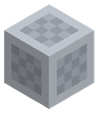
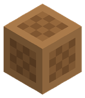
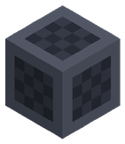
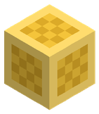
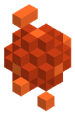
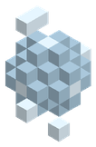
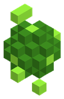

Botín y rareza
Las armas y piezas de equipo que sueltan los enemigos salen con una rareza que sube sus estadísticas base y añade propiedades sorteadas. La mejora +0…+20 va encima de todo eso.
Rarezas
| Rareza | Bono a las estadísticas | Propiedades extra | Brillo | Requisito |
|---|---|---|---|---|
| Común | 0 % | 0 | ||
| Poco común | +15 % | 1 | ||
| Rara | +35 % | 2 | ||
| Épica | +60 % | 3 | Sí | |
| Legendaria | +100 % | 4 | Sí | |
| Mítica | +150 % | 5 | Sí | peligro 400 o más |
La suerte sube con el nivel del enemigo (0,2 % por nivel) y con su rango: veterano +0,25, élite +0,5, campeón +1, legendario +2. Los jefes sueltan como mínimo rareza Épica y los enemigos únicos Legendaria, y a partir de ciertos niveles aún más.
Propiedades sorteadas
| Propiedad | Valor | En |
|---|---|---|
| Daño | +3 % a +10 % | Arma, Jewel |
| Velocidad de ataque | +3 % a +8 % | Arma, Jewel |
| Probabilidad de crítico | +1 % a +5 % | Arma, Jewel, Armor |
| Daño crítico | +5 % a +25 % | Arma, Jewel |
| Coste de hechizos | +2 % a +6 % | Arma, Jewel |
| Velocidad de movimiento | +2 % a +6 % | Armor, Jewel |
| Esquiva | +1 % a +4 % | Armor, Jewel, Shield |
| Vida | +10 % a +30 % | Armor, Shield, Jewel |
| Armadura | +10 % a +30 % | Armor, Shield |
| Regeneración | +10 % a +40 % | Armor, Jewel |
| Maná | +10 % a +30 % | Armor, Jewel |
| Regeneración de maná | +10 % a +40 % | Armor, Jewel |
| Estamina | +10 % a +30 % | Armor, Jewel |
| Regeneración de estamina | +3 % a +10 % | Armor, Jewel |
| Velocidad de minado | +3 % a +8 % | Jewel |
| Velocidad nadando | +5 % a +15 % | Armor |
| Resistencia al fuego | +3 % a +10 % | Armor, Jewel, Shield |
| Resistencia al hielo | +3 % a +10 % | Armor, Jewel, Shield |
| Resistencia al rayo | +3 % a +10 % | Armor, Jewel, Shield |
| Resistencia al veneno | +3 % a +10 % | Armor, Jewel, Shield |
| Resistencia a la sombra | +3 % a +10 % | Armor, Jewel, Shield |
| Resistencia sagrada | +3 % a +10 % | Armor, Jewel, Shield |
Forja de escultura
Con un arma en la mano, pulsa E en un yunque para pegarle cubitos. Cada cubito suma un poco a las estadísticas del arma y algunos dan efectos al golpear. Los porcentajes son por cubito.
| Cubito | Por cubito | Efecto al golpear |
|---|---|---|
 Cubito de Hierro | Daño +1,5 % | — |
 Cubito de Madera | Velocidad de ataque +1,2 % | — |
 Cubito de Acero | Daño +2,5 % | Perforación de armadura · 1,5 % (al golpear) |
 Cubito de Oro | Probabilidad de crítico +1 % | — |
 Espíritu de Fuego | Daño +1 % | Quemadura · 15 % · 3 s · prob. 3 % (al golpear) |
| Espíritu de Hielo | — | Ralentización · 40 % · 2 s · prob. 3 % (al golpear) |
 Espíritu de Viento | Velocidad de ataque +2 % | Empuje · 6 · prob. 3 % (al golpear) |
 Espíritu de Veneno | — | Veneno · 15 % · 4 s · prob. 3 % (al golpear) |